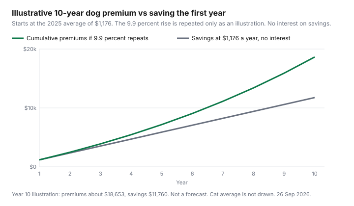
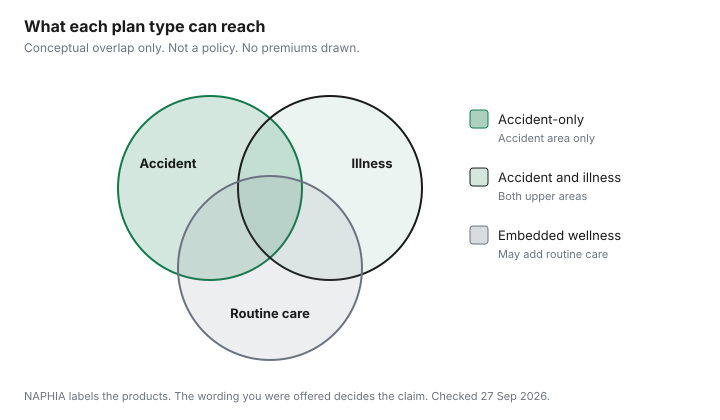

Pets · Canada
Is Pet Insurance Worth It in Canada? A Premium-vs-Emergency-Fund Framework With 2025 Industry Data
Part of our Pets hub.

The useful question is not which logo to buy. It is whether the premium you would pay, set beside a savings fund you will actually keep, fits the way your household already handles a big irregular bill. The averages below are Canadian dollars from the North American Pet Health Insurance Association’s 2026 State of the Industry highlights, which reflect the 2025 calendar year (PDF as of 26 Sep 2026). They are not a quote. They are not a ranking. No insurer is named, and nothing here is a recommendation to buy or to decline a policy. Read the contract, or read the clause guide before you treat an average as your price.
Key takeaways
- NAPHIA’s 2025 Canadian average accident-and-illness premium is $1,176 for a dog and $601 for a cat. Per month, that is $98.00 and $50.08, with no increase assumed inside the year.
- Those two averages rose 9.9 percent and 9.1 percent from 2024. Accident-only averages fell. Insurance with embedded wellness rose faster than accident-and-illness, to $2,623 for dogs and $1,499 for cats.
- Canadian pet-insurance penetration in the highlights is 3.72 percent. The report does not publish a median claim, a premium by age, or a premium by breed.
- Five years of the 2025 dog accident-and-illness average, with no further increase, is $5,880. The same flat sum for a cat is $3,005. A repeating annual increase is illustrated on the chart and labelled as illustration.
- A fund only works if the cash stays put. Use the same parking decision as any other emergency balance, not a jar you spend in March.
- NAPHIA’s 2026 State of the Industry report puts the average Canadian accident-and-illness premium at $1,176 a year for dogs ($98 a month) and $601 for cats ($50.08 a month) (checked 23 Oct 2026).
Pet insurance cost per month in Canada (checked Oct 2026)
The North American Pet Health Insurance Association publishes average Canadian premiums each year. These are averages across all insured pets, so a young mixed-breed cat will usually quote below them and an older large-breed dog above.
| Pet | Average per year | Per month | Five years at that price |
|---|---|---|---|
| Dog | $1,176 | $98.00 | $5,880.00 |
| Cat | $601 | $50.08 | $3,005.00 |
The self-insure test: if you put the same $98.00 a month aside for a dog, you would have $3,528.00 after three years. Compare that with the emergency you are worried about. Insurance wins if a big bill is likely to arrive before the fund is big enough, or if you would not keep the savings untouched.
What Canadians pay: NAPHIA 2025 average accident and illness premiums of about $1,176/yr for dogs and $601/yr for cats
The highlights report is dated in the footer 21 Jun 2026. It says the data represent about 99 percent of written pet health insurance premium in the United States and Canada, compiled by Willis Towers Watson from a member survey plus public information.
Dollar amounts are in the country’s currency. The Canadian premium table is therefore in Canadian dollars. In-force premium and insured-pet counts are as at 31 Dec 2025. The premium page carries the report’s first footnote: member-contributed data plus public sources, aggregated, with actuarial inferences where the compilers needed them. Treat the averages as industry benchmarks, not as the price on your screen tomorrow.
Accident-and-illness, the product the report describes as accident benefits plus illnesses such as cancer, infections, and digestive problems, averages $1,176 for a dog and $601 for a cat in 2025. Accident-only, described with examples that include foreign-body ingestion, lacerations, motor vehicle accidents, ligament tears, and poisoning, averages $251 for a dog and $212 for a cat. Insurance with embedded wellness, described as comprehensive plans that may include vaccinations, early screening, nutrition consultations, dental care, and similar items, averages $2,623 for a dog and $1,499 for a cat. The word “may” is the report’s. Dental on a wellness average is not a promise that your dental invoice is covered. That sentence lives in the wording.
The same highlights put Canada’s in-force gross written premium at $660.5 million at year-end 2025, up 13.1 percent. Insured dogs were about $556.3 million, 84.2 percent of that premium. Insured cats were about $104.2 million, 15.8 percent. Total insured pets in force rose 3.9 percent, the smallest increase in the five years shown. Dogs were 73.6 percent of insured pets and cats 26.4 percent. Penetration, using a Statista May 2026 pet-population figure the report cites, is 3.72 percent of an estimated 17.3 million pets, with dogs at 5.64 percent of 8.4 million and cats at 1.91 percent of 8.9 million. Most Canadian dogs and cats are uninsured on that arithmetic. An average premium is the price among those who are in a policy, not a bill the country has already decided you should pay. Ontario accounted for 36.2 percent of insured pets and 37.6 percent of premium in the member-only provincial table. That is a distribution, not a reason to assume your quote matches the national average.
Why premiums rise (about +9–10% in 2025) and with age
The 9 to 10 percent band in the heading is the accident-and-illness change: dogs up 9.9 percent, cats up 9.1 percent, from 2024 to 2025. The rest of the Canadian table does not march in lockstep.
Accident-only dogs fell 6.9 percent, to $251, and accident-only cats fell 4.4 percent, to $212. Wellness dogs rose 12.6 percent and wellness cats rose 21.9 percent. Earlier accident-and-illness increases on the same table were larger: dogs 13.7 percent in 2024 and 15.6 percent in 2023; cats 12.6 percent in 2024 and 14.3 percent in 2023. The report also says Canadian premium growth overall was 13.1 percent in 2025, against 3.9 percent growth in insured pets, which is the industry’s way of saying the average price rose faster than the headcount. None of those rates is a forecast for your renewal.
Age is the part the highlights do not quantify. There is no table of premiums by birthday. There is no sentence that names a percent increase at a given age. If a quote or a renewal changes because the animal is older, the evidence is that document, not this report. The renewal guide is the household habit of reading the offer before it renews. It was written for home and auto habits, and the habit transfers: get the number in writing, and do not argue with an average when your page shows a different one. Switching after a condition exists is a separate risk, covered in the policy guide, not a trick that freezes the 2025 average.
Self-insuring: how big a vet emergency fund must be, and how long it takes to build
NAPHIA’s highlights do not publish a median Canadian claim, so this page will not announce that the fund “must” equal a typical surgery. The only emergency span opened beside the premium report is on the Competition Bureau’s 30 Oct 2024 market piece, which says emergency trips to the veterinarian can cost an additional $215 to $1,615 per year.
That sentence sits beside older Ontario Veterinary Medical Association annual totals, not beside the 2025 cost sheets. It is an annual additional range in the Bureau’s summary, not one invoice and not a 2025 price list. A single year of the 2025 dog accident-and-illness average, $1,176, falls inside that $215 to $1,615 span. A single year of the cat average, $601, also falls inside it. That comparison does not prove a policy pays the bill. It shows how the published premium sits against the only annual emergency range this guide cites.
How long the fund takes is arithmetic on the premium you would have paid, saved instead, with no investment return assumed. Saving $1,176 a year reaches $1,176 in twelve months, which is inside the Bureau’s annual range and short of a second year of the same range if the top of that range repeated. Saving $601 a year reaches the cat premium in twelve months. Reaching the top of the Bureau’s range, $1,615, at the dog premium’s pace takes $1,615 divided by $1,176, or about 1.4 years of deposits, if you do not spend the balance. The sinking-fund guide is the envelope. The savings-account guide is the parking. A fund that is raided for a non-vet bill is not self-insurance. It is a delay. The 2025 canine cost sheet’s adult total is a different pile of money, routine care plus an insurance estimate, and it should not be confused with this emergency balance. Routine lines are going to be spent. The emergency fund is the amount you hope not to spend.
Break-even scenarios: young mixed breed vs a breed prone to costly conditions
The highlights do not price a young mixed breed against a breed associated with expensive conditions. They do not price age bands.
Using the national average as “the mixed-breed price” would invent a discount the report does not print. The honest version of this scenario is a pair of questions you ask the quote, then a pair of sums you can already do with the averages. Ask whether the price changes with age, and whether hereditary or congenital conditions are excluded or capped. Those answers, not the species average, are what separate one dog from another. The policy guide is where those clause types are listed. This report’s accident examples include ligament tears inside accident benefits. Whether a particular ligament claim is paid is the wording and the waiting period, not the breed’s reputation.
What the averages can support is a flat five-year sum, and a labelled illustration if last year’s percent repeated. Five times $1,176 is $5,880. Five times $601 is $3,005. Five times the accident-only averages is $1,255 for a dog and $1,060 for a cat. Five times the wellness averages is $13,115 for a dog and $7,495 for a cat. If the Bureau’s $215 to $1,615 additional emergency range repeated for five years, the span would be $1,075 to $8,075. The flat dog accident-and-illness total, $5,880, sits inside that repeated span. The flat cat total, $3,005, also sits inside it. The wellness dog total, $13,115, sits above it. This is arithmetic on two published figures, not a prediction that your dog will have an emergency every year, and not a claim that the Bureau’s range is a covered loss. A year with no claim makes the premium look expensive. A year at the top of a real invoice can make the fund look small. The report does not tell you which year you will get.
| Product | Dog, 2025 | Cat, 2025 | Change, dog / cat | Five years, flat |
|---|---|---|---|---|
| Accident only | $251 | $212 | −6.9% / −4.4% | $1,255 / $1,060 |
| Accident and illness | $1,176 | $601 | +9.9% / +9.1% | $5,880 / $3,005 |
| With embedded wellness | $2,623 | $1,499 | +12.6% / +21.9% | $13,115 / $7,495 |
| Penetration | 5.64% of dogs | 1.91% of cats | 3.72% of pets overall | Not a premium |
| Comparison | Dog | Cat |
|---|---|---|
| 2025 accident-and-illness average | $1,176 | $601 |
| Five years, no increase | $5,880 | $3,005 |
| Bureau range times five, if it repeated | $1,075 to $8,075 | $1,075 to $8,075 |
| Where the flat premium sits | Inside that repeated span | Inside that repeated span |
| Months to save one year of premium, at that same premium, no interest | 12 months to $1,176 | 12 months to $601 |

Accident-only, accident and illness, and wellness add-ons compared
The price gaps are the comparison this report will support. Dog accident-and-illness at $1,176 is $925 a year more than dog accident-only at $251.
Cat accident-and-illness at $601 is $389 more than cat accident-only at $212. Dog wellness at $2,623 is $1,447 more than dog accident-and-illness. Cat wellness at $1,499 is $898 more than cat accident-and-illness. Those gaps are premiums, not benefits. Accident-only, on the report’s description, is the accident list. Illnesses such as cancer and infections are the step up to accident-and-illness. Wellness “may” include vaccines, screening, nutrition consultations, and dental. The Ontario 2025 adult dental line on the cost sheets is $1,320 for a dog and $1,320 for a cat. The extra wellness premium for a dog, $1,447, is larger than that one dental line. The extra wellness premium for a cat, $898, is smaller than that one dental line. That arithmetic does not mean wellness pays the dental bill. It means you should not buy the more expensive average unless the wording you were given actually covers the invoices you already know you will face, such as a dental estimate you have in hand.
Endorsements and riders are mentioned in the report’s product list, including wellness or cancer riders, and they are not given Canadian average prices in the report. If a quote adds a rider, price the rider alone. Do not assume it costs the gap between the columns above. The quote spreadsheet is the place to lock the same deductible, the same reimbursement, and the same limit before you sort on monthly price. A cheaper accident-only premium that excludes the illness you are worried about is not the same product as the $1,176 average.
Decision checklist before you buy
Work the list on paper. The average is only step one.
- Write the quoted annual premium next to the NAPHIA average for that species and product. A large gap is a question, not a bargain badge and not a rip-off badge.
- Name the product: accident-only, accident-and-illness, or wellness. Use the report’s descriptions only as a glossary. The wording wins.
- Find the deductible type, the reimbursement percent, the annual or per-condition limit, the waiting periods, and the pre-existing definition. The policy guide is the reading order.
- Ask what happens to the premium at the next birthday. The highlights do not answer that.
- Decide the fund you will hold if you decline. One year of the quoted premium, parked and not spent, is the minimum honest alternative. The Bureau range is context, not your target balance.
- Check the renewal habit on the annual review list so a pet policy does not auto-renew in a month you meant to compare.
- If you use a quote or comparison referral later, it is an offer type under the disclosure. It is not a ranking, and it is not this page’s advice to buy.
Wellness plans and add-ons: insurance or prepaid routine care?
Embedded wellness, as NAPHIA describes it, can look like insurance and behave like a schedule of routine services. The test is simple.
If the plan pays only after an unexpected illness or injury, it is not buying your vaccines. If the plan may include vaccines, screening, nutrition consultations, and dental care, you are looking at a product that can prepay routine work, and you still have to read which of those items are actually listed. The highlights do not itemize a Canadian wellness basket. They price the product category. Dog embedded wellness at $2,623 is $1,447 above the dog accident-and-illness average of $1,176. Cat embedded wellness at $1,499 is $898 above the cat accident-and-illness average of $601. Those gaps are premiums. They are not benefits.
A wellness rider, which the report lists under endorsements, is a different object again. The highlights do not give it a Canadian average price. If a quote adds a rider, price the rider alone. Do not assume it costs the gap between the columns. Write down what the rider pays, the annual cap if there is one, and whether unused routine benefits disappear at renewal. A prepaid exam you will not book is not a saving. The adult lines on a cost-of-care sheet are the routine bills you can already see coming. This page does not reprint procedure fees from those sheets. Use the dog cost guide for the sheet cited in that article, and use your own invoices for the year you are budgeting.
When the add-on is neither
Some offers mix a discount, a hotline, or a first month with the insurance contract. The Pets Plus Us Costco page says the first month is complimentary for new clients, and it says in-app purchases on a virtual-consult tool are not covered under the policy. A complimentary month and a virtual consult are not a wellness plan. Put them in a separate line on your comparison sheet so they do not masquerade as dental coverage. The quote spreadsheet is the habit of locking the same deductible, reimbursement, and limit before you sort on price. It was written for household policies. The columns transfer.
Waiting periods, pre-existing conditions and exclusions by plan type
A waiting period is a stretch at the start of the policy, or after a change, when a class of claims is not eligible. Illness waits and injury waits are often separate sentences.
Ligament tears appear in NAPHIA’s accident examples, and the report does not say how many days an insurer waits before a ligament claim can be eligible. No day count is copied here. A Trupanion sample page returned an access block on 27 Sep 2026, so this guide does not quote a five-day or thirty-day clock from that site. If your booklet prints a number of days, that number is yours.
Pre-existing is the definition of which signs, diagnoses, or treatments from before the policy, or during a waiting period, will not be paid later. The highlights do not print a look-back in months, and they do not print a rule that a condition becomes eligible again after a symptom-free stretch. The Costco offer page does print one version: noted, symptomatic, or diagnosed prior to enrollment, or during a waiting period, means not eligible. Curable and incurable are the fork inside other wordings. Both can be labelled “pre-existing” on a summary screen. The summary is not the definition. Read it before you cancel a policy you already have. Switching is the subject of the renewal guide, because a lower premium that excludes the condition already in the file is not the same product.
Exclusions by plan type follow the glossary only as far as the glossary goes. Accident-only, on the examples, is not the illness list. Accident-and-illness, on the examples, is not a promise of vaccines. Wellness “may” add routine items and still exclude a condition the wording calls pre-existing, hereditary, or elective. Breeding, cosmetic procedures, and food that is not a prescribed treatment are the sort of line you should search for in the booklet. This page does not assert that every Canadian policy excludes them, because no national specimen was the source. Search your PDF for those words and write down what you find.
Plan-type comparison table and a checklist for reading a policy
Read in this order. Name the product in the insurer’s words, not the ad’s. Write the accident examples and the illness examples you were given, and circle anything your pet has already been treated for.
Find the waiting periods and when each clock starts. Find the pre-existing definition, including whether a symptom-free stretch exists. Find the deductible, the reimbursement percent, and the annual or per-condition limit. Find what routine care is inside the contract and what is a separate rider. Then put the annual premium next to the NAPHIA average for that species and that product. A large gap is a question, not a bargain badge and not a rip-off badge. Confirm the underwriter on the specimen, not on a warehouse-club banner. One worked example of that last step is the group and membership guide.
| Plan type | What the source says it covers | What to treat as not granted | Waiting periods | Who it can suit | 2025 Canadian average, dog / cat |
|---|---|---|---|---|---|
| Accident-only | NAPHIA examples: foreign-body ingestion, lacerations, motor vehicle accidents, ligament tears, poisoning. | Illnesses such as cancer, infections, and digestive problems are the step up, not this column. No national exclusion list was printed. | Not published in the highlights. Read the wording. | A household that can fund illness from cash and wants a contract aimed at the injury list. | $251 / $212 |
| Accident and illness | Accident benefits plus illnesses such as cancer, infections, and digestive problems. | Vaccines, screening, nutrition consults, and dental are not this description. Pre-existing rules still apply. | Not published in the highlights. The Costco offer page says a waiting period can make a condition pre-existing, without printing days. | A household insuring unexpected illness as well as injury, and still holding cash for the deductible and the excluded lines. | $1,176 / $601 |
| Embedded wellness | Comprehensive plans that may include vaccinations, early screening, nutrition consultations, and dental care. | “May” is not a coverage grant. Riders are a separate product and have no Canadian average in the highlights. | Not published. Confirm which routine items have no wait and which medical items do. | A household that will use the routine items actually listed, after comparing them with invoices it already expects. | $2,623 / $1,499 |

Age-rated vs entry-age pricing: what your policy says about future premiums
Two contract patterns get confused because both use the word age. In an age-rated pattern, the premium is revisited because the animal is older at renewal.
In an entry-age pattern, age is an input when you enrol, and a later increase is tied to something else, such as the cost of veterinary care for animals with the same enrolment factors, not to the birthday by itself. The highlights do not say which pattern any Canadian insurer uses. A Trupanion page that discusses birthday pricing returned an access block on 27 Sep 2026, so this guide does not attribute either pattern to that company or to anyone else.
The practical test is on the page you can open. Find the sentence that says whether premium, coinsurance, or coverage changes because the pet ages, because you claimed, or because veterinary costs for a group of similar pets changed. Write down the notice period before an increase takes effect, if one is printed. The chart on this page draws the two patterns as shapes with no dollars on the axis, because a numbered forecast would invent a path the report does not print. Your declarations page is the numbered path. The household habit of reading an offer before it renews is the renewal guide. It was written for home and auto. The habit transfers: get the number in writing, and do not argue with an average when your page shows a different one.
At renewal: levers you control (deductible, reimbursement %, annual limit)
Three levers sit on most quotes. A higher deductible means you pay more of the first dollars of an eligible claim.
A lower reimbursement percent means you keep a larger share of every eligible dollar after the deductible. A lower annual limit means the contract stops sooner. In ordinary insurance arithmetic, each of those moves the premium down and your risk up. This page does not cite a rate manual, so it will not say that a particular change saves a particular percent. The quote is the only place that percent exists for your pet. Run the quote twice, write both annual premiums, and write what you would pay on a bill of the size your clinic’s estimate describes. The vet-bill guide is how to ask for that estimate in Ontario. The emergency fund is where the extra out-of-pocket has to live if you pull a lever.
Do not “save” by dropping a benefit you cannot replace. Moving from accident-and-illness to accident-only is not a deductible change. It removes the illness list, on NAPHIA’s own description of the two products. That can be a coherent choice. It is not a quiet tweak. Confirm the new product name in the insurer’s words before you compare the two premiums.
Switching insurers: the pre-existing-condition trap
A new quote applies a new definition to the file the clinic already has. The highlights do not print a look-back in months.
The Pets Plus Us Costco offer page, as of 27 Sep 2026, says medical conditions that are noted, symptomatic, or diagnosed prior to enrollment, or during a waiting period, are pre-existing and not eligible for reimbursement. That is one offer. Another wording may allow a symptom-free stretch. Both are “pre-existing” until you read the definition. Get the new definition, the new waits, and the new limit in writing, and keep the old policy until the new one is in force and the waits you care about have been explained. Cancelling first is how a covered condition becomes an excluded one for a stretch you did not budget.
After a denial, start with the insurer’s complaint path and keep the final position letter. The denied-claim guide is the household version of that file. It is not a way to rewrite a definition you already accepted. This page does not rank a destination insurer. A comparison referral, if you use one later, is an offer type under the disclosure, not a verdict.
Sources
- NAPHIA, 2026 State of the Industry Report highlights, footer dated 21 Jun 2026, reflecting the 2025 calendar year. As of 26 Sep 2026. Canadian premiums, growth rates, penetration, gross written premium, and product descriptions as cited. Currency note: Canadian figures in Canadian dollars. Premium page uses the report’s footnote on member data plus public sources. Provincial shares use the member-only footnote. No insurer is named. No age or breed premium table was in the highlights.
- Five-year flat products: $251×5, $212×5, $1,176×5, $601×5, $2,623×5, $1,499×5. Monthly accident-and-illness: $1,176÷12 = $98.00; $601÷12 = $50.08. Chart: illustrative repeat of the 9.9 percent dog accident-and-illness change, not a forecast.
- Competition Bureau, “Pets, vets and meds,” 30 Oct 2024. Additional emergency trips described as $215 to $1,615 per year, in a paragraph beside older OVMA annual totals. Not the 2025 cost sheets. Five times that range is $1,075 to $8,075, labelled as repetition, not a prediction.
- A median Canadian claim, a required fund size, and breed-specific premiums were not in the highlights. They are omitted.
- NAPHIA, State of the Industry 2026 report highlights: average annual premium per dog $1,176 and per cat $601 in Canada (2025 data). Checked 23 Oct 2026.
Frequently asked questions
How much does pet insurance cost in Canada?
NAPHIA’s highlights for the 2025 calendar year, as of 26 Sep 2026, put the Canadian accident-and-illness average at $1,176 a year for dogs and $601 for cats. That is $98.00 and $50.08 a month if you simply divide by twelve. Accident-only averages are $251 and $212. Averages with embedded wellness are $2,623 and $1,499. These are industry averages in Canadian dollars, not your quote, and penetration was 3.72 percent of pets.
Is it better to save instead of buying pet insurance?
The highlights do not answer that. They do not publish a median claim you can beat. Saving the dog accident-and-illness average sets aside $1,176 in a year, or $5,880 in five years if the price never rises and you never spend it. The same flat sums for a cat are $601 and $3,005. The Competition Bureau’s 30 Oct 2024 page describes additional emergency trips of $215 to $1,615 a year, beside older cost estimates. A fund you spend on something else is not a substitute. Whether insurance is the better tool is the wording and your cash, not a ranking on this page.
Why do premiums rise every year?
They do not, in every product, in the one year this table shows. From 2024 to 2025, Canadian accident-and-illness averages rose 9.9 percent for dogs and 9.1 percent for cats. Accident-only averages fell 6.9 percent and 4.4 percent. Wellness averages rose 12.6 percent and 21.9 percent. Overall Canadian premium volume rose 13.1 percent while insured pets rose 3.9 percent. The report does not publish an age table, so a birthday increase is whatever the renewal says. Repeating 9.9 percent on the chart is an illustration, not a promise that next year matches 2025.
What's the difference between accident-only and accident and illness?
In NAPHIA’s own glossary, accident-only is illustrated with foreign-body ingestion, lacerations, vehicle accidents, ligament tears, and poisoning. Accident-and-illness adds illnesses such as cancer, infections, and digestive problems on top of accident benefits. The 2025 Canadian price gap is $925 a year for dogs ($1,176 minus $251) and $389 for cats ($601 minus $212). Those descriptions are the report’s examples. Your policy’s definitions and exclusions decide a claim. Ligament tears appearing in the accident example does not delete a waiting period in the wording.
Is wellness coverage worth adding?
The highlights do not score it. They price insurance with embedded wellness at $2,623 for dogs and $1,499 for cats, which is $1,447 and $898 above the accident-and-illness averages. The report says those plans may include vaccines, screening, nutrition consultations, and dental care. “May” is not a coverage grant. The 2025 Ontario adult dental line on the veterinary association sheets is $1,320, which is a different document. Compare the rider you were actually offered with the invoices you already expect. This page does not name a plan that wins that comparison.
What does accident-only pet insurance cover?
NAPHIA’s 2026 highlights, reflecting the 2025 calendar year, describe accident-only with examples that include foreign-body ingestion, lacerations, motor vehicle accidents, ligament tears, and poisoning. Accident-and-illness is those accident benefits plus illnesses such as cancer, infections, and digestive problems. The highlights do not publish a national exclusion list or a waiting-period day count. The policy wording you were offered is the list that decides a claim.
Are pre-existing conditions ever covered?
The highlights do not print a rule that a pre-existing condition becomes covered after a set number of months. The Pets Plus Us Costco offer page, as of 27 Sep 2026, says medical conditions that are noted, symptomatic, or diagnosed before enrollment, or during a waiting period, are pre-existing and not eligible for reimbursement. Some other wordings use a symptom-free period. That period, if any, is in the user guide, not in the highlights.
What waiting periods apply?
NAPHIA’s highlights do not publish how many days an insurer waits. The Pets Plus Us offer page says waiting periods may apply and that the user guide prevails, and it does not print the day count. A condition that starts during a waiting period can be treated as pre-existing on that offer page. Read the clocks on the wording you were given before you rely on a number from a forum.
Can I lower my premium without switching?
The highlights do not publish a rate for a higher deductible, a lower reimbursement percent, or a lower annual limit. Those levers usually trade premium for more of the bill in your hands. The direction is a question for the quote. Confirm the new out-of-pocket on the same page as the new premium, and do not treat a forum’s percent as your saving.
Should I switch pet insurers?
You can ask for a new quote. The risk is the new pre-existing definition, the new waiting periods, and a gap if you cancel first. The Pets Plus Us offer page treats conditions noted, symptomatic, or diagnosed before enrollment or during a waiting period as not eligible. A lower number that excludes the condition you already claim is not a saving. This page does not name a company to switch to.
What is entry-age pricing?
Entry-age pricing, as a contract pattern, uses the pet’s age when you enrol and does not raise the premium only because the pet had a birthday. Age-rated pricing revisits age at renewal. The NAPHIA highlights do not say which pattern a Canadian insurer uses, and no insurer page on birthday pricing is cited here. The sentence that answers the question is in your wording or your renewal notice.
Researched and drafted with AI assistance and fact-checked against official Canadian sources. How we create content.
Note: We do not rank plans and we do not name a best policy. Education only, not insurance advice. The wording you are offered is the contract.